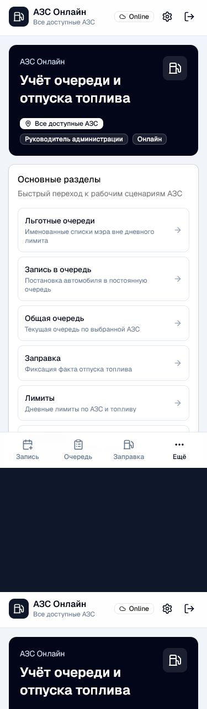
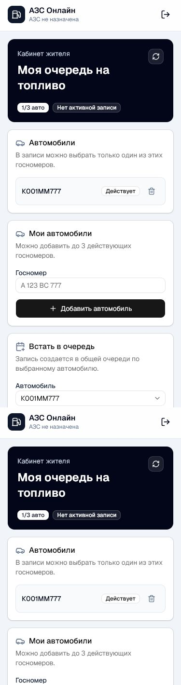
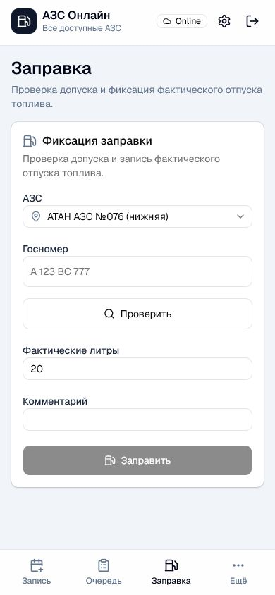
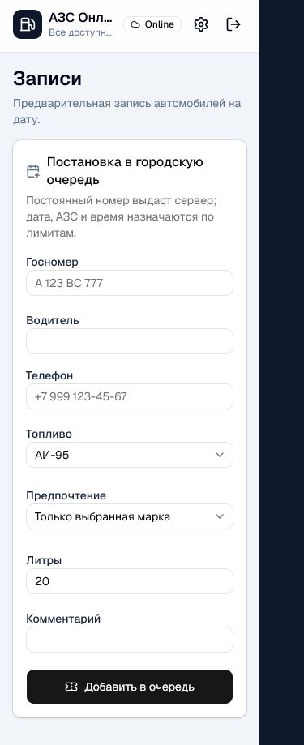
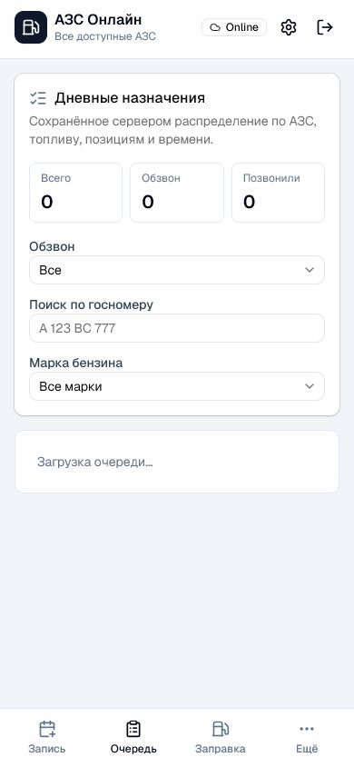
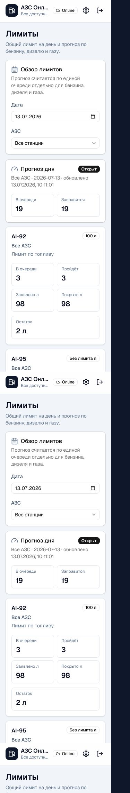
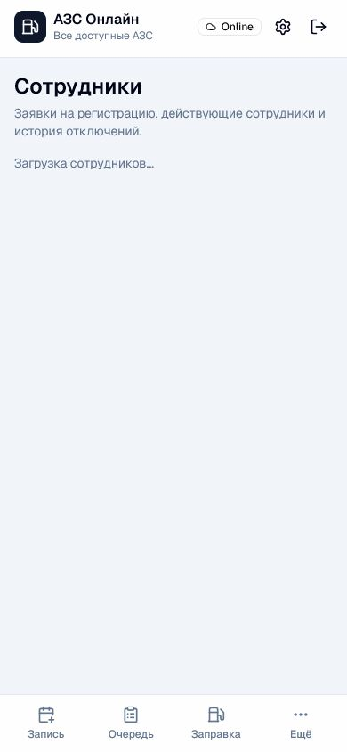
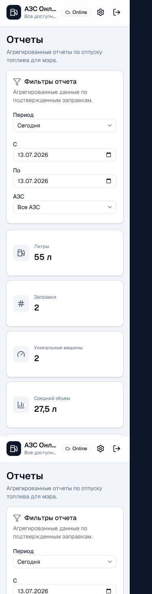
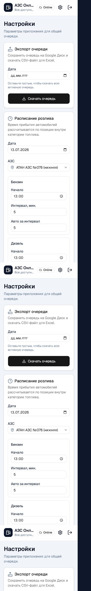

АЗС Онлайн
Краткая методичка по ролям
Что делать в приложении сотрудникам АЗС, администрации и жителю. Только основные действия: вход, запись, очередь, заправка, лимиты, отчеты и доступы.
Общие правила
- Откройте приложение и войдите под своей учетной записью.
- Проверьте, что вверху указана нужная АЗС или доступ ко всем АЗС.
- Работайте только в разделах, которые доступны вашей роли.
- Если раздел не открывается, обратитесь к руководителю или администратору.
- Если форма показывает ошибку, исправьте выделенное поле и повторите действие.
Нижнее меню ведет в основные разделы: Запись, Очередь, Заправка и Ещё.

Главный экран с доступными разделами
Пользователь / житель
Используйте личный кабинет, чтобы добавить автомобиль, встать в очередь, посмотреть статус записи или отменить запись, пока она еще доступна для отмены.
- Войдите в личный кабинет.
- В блоке Автомобили проверьте добавленные госномера.
- Если нужного номера нет, введите госномер и нажмите Добавить автомобиль.
- В блоке Встать в очередь выберите автомобиль, топливо и проверьте телефон.
- Нажмите Создать запись.
- Если появилась активная запись, следите за статусом, очередью и назначенной АЗС.
- Если запись больше не нужна и кнопка отмены доступна, нажмите Отменить запись.
Обратитесь к сотруднику, если запись уже взята в работу, отмена недоступна, номер не добавляется или данные отображаются неверно.

Кабинет жителя
Кассир АЗС
Используйте раздел Заправка, когда автомобиль приехал на АЗС и нужно проверить допуск, а затем зафиксировать фактический отпуск топлива.
- Откройте раздел Заправка.
- Проверьте выбранную АЗС.
- Введите госномер автомобиля.
- Нажмите Проверить.
- Если доступ разрешен, укажите фактические литры.
- При необходимости добавьте короткий комментарий.
- Нажмите Заправить только после фактического отпуска топлива.
Если доступ запрещен, не оформляйте заправку. Сообщите водителю причину на экране и при необходимости передайте вопрос управляющему.

Проверка допуска и фиксация заправки
Админ / помощник
Используйте эту роль для постановки автомобилей в очередь, просмотра текущей очереди и помощи с рабочими ситуациями по записи.
Запись автомобиля
- Откройте раздел Запись.
- Введите госномер.
- Выберите дату, топливо и данные водителя.
- Проверьте корректность номера перед отправкой.
- Нажмите кнопку создания записи.
- После создания проверьте, что автомобиль появился в очереди.
Работа с очередью
- Откройте раздел Очередь.
- Выберите нужную АЗС и дату, если на экране есть такие фильтры.
- Смотрите позицию автомобиля, статус и доступное топливо.
- Если запись нужно отменить, укажите понятную причину.


Управляющий АЗС
Используйте эту роль для контроля своей АЗС: очередь, заправки, лимиты и сотрудники.
- На главном экране проверьте, что указана нужная АЗС.
- Откройте Лимиты и посмотрите доступный объем по топливу.
- Откройте Очередь и проверьте текущие записи.
- При спорной ситуации проверьте автомобиль через Заправка.
- Если требуется ручное решение, оформляйте его только при понятной причине.
- В разделе Сотрудники проверяйте заявки и доступы сотрудников вашей АЗС.
Если лимит закончился, не создавайте неподтвержденные обещания водителям. Передайте информацию руководителю или дождитесь обновления лимита.


Руководитель администрации
Используйте эту роль для общего контроля по всем 3 АЗС: отчеты, лимиты, настройки и доступы сотрудников.
- На главном экране убедитесь, что доступен просмотр всех АЗС.
- В Лимиты контролируйте дневные объемы топлива.
- В Очередь смотрите общую ситуацию по записям.
- В Отчёты проверяйте фактический отпуск топлива.
- В Сотрудники подтверждайте или отключайте доступы.
- В Настройки меняйте только те параметры, в которых уверены.
Вмешивайтесь при повторной попытке заправки, споре по номеру, превышении лимита, ошибке в роли сотрудника или необходимости ручного разрешения.


Короткая памятка
- Доступ запрещен: проверьте роль пользователя и выбранную АЗС.
- Номер не найден: проверьте госномер без лишних пробелов и ошибок.
- Запись уже есть: новую запись создавайте после завершения или отмены текущей.
- Лимит закончился: не фиксируйте заправку без разрешения ответственного лица.
- Форма не отправляется: заполните обязательные поля и проверьте подсказки под ними.
- Автомобиль уже заправлен сегодня: повторную обычную заправку не оформляйте.